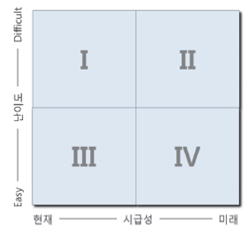

ADsP 문제 풀이 3일차
전체 복습
17회 기출문제
1. 분석 마스터 플랜에 대한 설명으로 가장 부적절한 것은?
과제 우선순위 평가는 비즈니스 효과인 시급성과 투자비용 요소인 난이도에 근거하여 결정된다.
분석 마스터 플랜은 중장기 마스터 플랜 수립과제 도출 및 우선순위 평가, 과제별 이행 계획 수립 순으로 진행한다.
과제별 데이터 분석 체계는 폭포수 방식도 있으나 반복적인 정련과정을 통하여 과제의 완성도를 높이는 방식으로 많이 사용한다.
분석 과제 로드맵은 과제의 우선순위를 고려하여 작성하되 과제별 선후관계를 감안하여 반복이 없는 계획을 작성한다.
17회 기출문제
2. 데이터 분석 조직 구조의 설명으로 가장 부적절한 것은?
집중형 조직 구조는 조직 내 별도의 분석 전담조직을 독립적으로 구성하는 것으로서 분석 업무의 중복 또는 이원화의 이슈가 있다.
기능 중심의 조직 구조는 별도의 분석 전담 조직을 구성하지 않고 해당 부처에서 직접 분석을 수행함으로써 국한된 분석 수행 이슈가 존재한다.
분산 구조는 분석 조직의 인력을 현업부서에 배치하여 분석 업무를 수행함으로써 분석이 집중되지 못해 신속한 실무적용이 어렵다.
분석조직은 분석 전문 인력 뿐만 아니라 도메인 전문가, IT인력, 변화관리 및 교육담당인력으로 구성되어야 효율적인 운영이 가능하다.
13회 기출문제
3. 아래의 내용 중 빅데이터 거버넌스에 대한 설명으로 가장 부적절한 것은?
빅데이터 분석은 다양한 데이터를 활용하기 위하여 회사 내 모든 데이터를 활용해야한다.
ERD는 운영 중인 데이터베이스와 일치하기 위하여 철저한 변경관리가 필요하다.
빅데이터 거버넌스는 산업분야별, 데이터 유형별, 정보 거버넌스 요소별로 구분하여 작성한다.
빅데이터 분석은 고품질의 데이터 확보가 필요하므로 데이터 수명 주기 관리 보다는 품질관리가 중요하다.
20회 기출문제
4. 아래는 분석 과제 우선순위 선정 매트릭스이다. 분석과제의 적용 우선순위를 시급성에 두었을 때 결정해야 할 우선순위로 적절한 것은?

3 - 2 - 1
3 - 4 - 2
3 - 2 - 4
3 - 1 - 2
20회 기출문제
5. 다음 중 분석 마스터 플랜을 수립할 때 적용 범위 및 방식에 대한 고려요소가 아닌 것은?
업무내재화 적용 수준
분석 데이터 적용 수준
투입 비용 수준
기술 적용 수준
제출하기